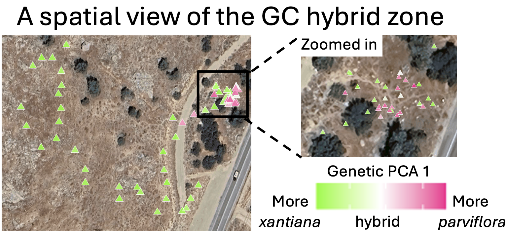

• 11. Sampling Bias
Motivating Scenario: You are designing your study or critically evaluating someone else’s research. You know that a sample should be a random draw from a population and need a framework to consider how non-random sampling could go wrong.
Learning Goals: By the end of this chapter, you should be able to:
- Define sampling bias and explain how it differs from sampling error.
- Identify and describe several common types of observational bias.
- Explain how bias can arise in experimental studies.
- Critically evaluate a study design for potential sources of bias.
We previously introduced sampling error - the unavoidable, random chance that makes our estimates differ from the truth. We noted that sampling error does not mean you did anything wrong, and showed that there are established tools to acknowledge and quantify sampling error.
Now we look into a scarier problem: sampling bias. Sampling bias describes “bug” in sample collection that makes the sample unrepresentative of the population (for example volunteer bias in Figure 1). Unlike random sampling error, you can’t fix bias by collecting more data - a larger biased sample just provides more certainty in the wrong answer. Thinking hard about a study design, how it could result in bias, and what can be done to prevent such bias is one of the most important skills in applied statistics.
Below, we look into potential issues in sampling bias, largely building off of an imagined attempt to sample the GC Clarkia xantiana hybrid zone.

(Avoiding) Sampling Bias
Say we we are interested in knowing the proportion of Clarkia xantiana plants that are hybrids between the two subspecies, parviflora and xantiana. To make this problem a bit easier, lets focus our attention on one field site, GC. Here we change our question from “what proportion of Clarkia xantiana plants are hybrids between the subspecies?” to the more precise “what proportion of Clarkia xantiana plants at GC are hybrids between the subspecies?”
Lucky for us, Dave is a very diligent researcher, and this population is not too large. So he censused the population – finding each plant and inferring its subspecies identity by genomic analyses (Figure 2). But, what if the population was too large to census, or what if we weren’t as motivated as Dave? How could we randomly sample the population to get this estimate and how could things go wrong if we do not sample randomly? Below I lay out some potential problems that could lead to a biased sample.

A sample of convenience
Imagine we were driving along the main road and stopped when we saw a large patch of Clarkia plants, roughly in the “zoomed in” region of Figure 2. If we collected all of those plants, we would mistakenly conclude that the population was roughly 1/4 hybrid, 1/4 xantiana, and 1/2 parviflora. In fact, the population is roughly 85% xantiana, 10% parviflora, and 5% hybrid. It’s not clear if this bias is due to luck (the hybrids and parviflora) just happen to be near the road, or something more predictable (e.g. hybrids and parviflora) do better in roadsides, it is clear that limiting our sample to the roadside would skew our view of the population. Of course. Here is an edited version of that section.
“Volunteer” Bias
Say that instead of sampling by the roadside, we walked around the entire hillside looking for Clarkia plants. Because xantiana flowers are larger, brighter, and more conspicuous, we might subconsciously sample them more often, biasing our sample towards xantiana.
This is a form of “volunteer” bias. As shown in Figure 1, this problem is especially common in surveys where the people who choose to respond are rarely representative of the entire population. The same principle applies in other contexts: it’s likely easier to catch a slow, docile mouse than a fast, skittish one, which would lead to a biased sample of animal behavior. et etc etc.
A Bias in Timing
Our Clarkia example highlights another potential issue: the timing of your sampling can matter. In general, parviflora flowers before xantiana does, so sampling early in the season will generate a different sample than sampling late in the season.
I point out this specific challenge of this system to highlight a broader principle: every study system has its own biological quirks that can frustrate efforts to get a truly random sample. It’s your job to consider these biological issues before collecting data.
Survivorship bias
Sometimes, bias is introduced because the individuals we sample are only the “survivors” of some process. For example, in our Clarkia data it is reasonable to assume that hybrids are less likely to survive to flowering than parents. If this is the case, we would underestimate the proportion of hybrids in our sample.

The classic example of survivorship bias comes from the location of bullet holes in WWII planes (Figure 3). Planes often returned with bullet holes in the wings and tails, suggesting to some in the army that these areas need better protection. The statistician Abraham Wald pointed out that it might be that planes shot in the engine and cockpit might be less likely to return than those shot in the tail - so it is the areas without bullet holes which require additional protection. This example has been elevated to a meme – a rapid shorthand for much survivorship bias.
Sometimes, you can address sampling bias by carefully reframing your research question to match what you actually sampled. For example, if we said, we were estimating the proportion of flowering Clarkia that were hybrids our bias would go away. However, this is not always the best solution – we want our statistics to answer biological questions of interest.
Changing the question so it is statistically valid may help us feel better, but leaves the inital question unanswered. For example, we want to know how likely planes are to get hit in th cockpit, making the question about wings does not solve this.
Bias in Experiments
While we’ve focused on sampling in observational studies, bias can also creep into experiments. Human psychology is powerful, and our expectations can easily influence results. For example, a doctor describing a new drug or a patient taking it might pay more attention to (or even imagine) signs of improvement. Similarly, a researcher might “notice” more pollinators visiting plants they spiked with extra sugar, simply because they are subconsciously looking for that outcome.
Randomized study: Participants are randomly assigned to either the treatment or control group to ensure both groups are as similar as possible from the start.
Double-Blind study: This means that neither the participants nor the researchers assessing the outcomes know who is in the treatment group and who is in the control group. This setup prevents the expectations of either group from influencing the results.
Bias also arises if individuals aren’t randomly assigned to treatment groups. For example, if only the sickest patients are given a new medication, while the kinda sick patients are in the control group, we may see more success for the treatment because the sicker people had more room to improve. Whether the bias comes from how groups are assigned or from human expectations, the solution is the same – the gold standard for many experiments is the randomized, double-blind study.